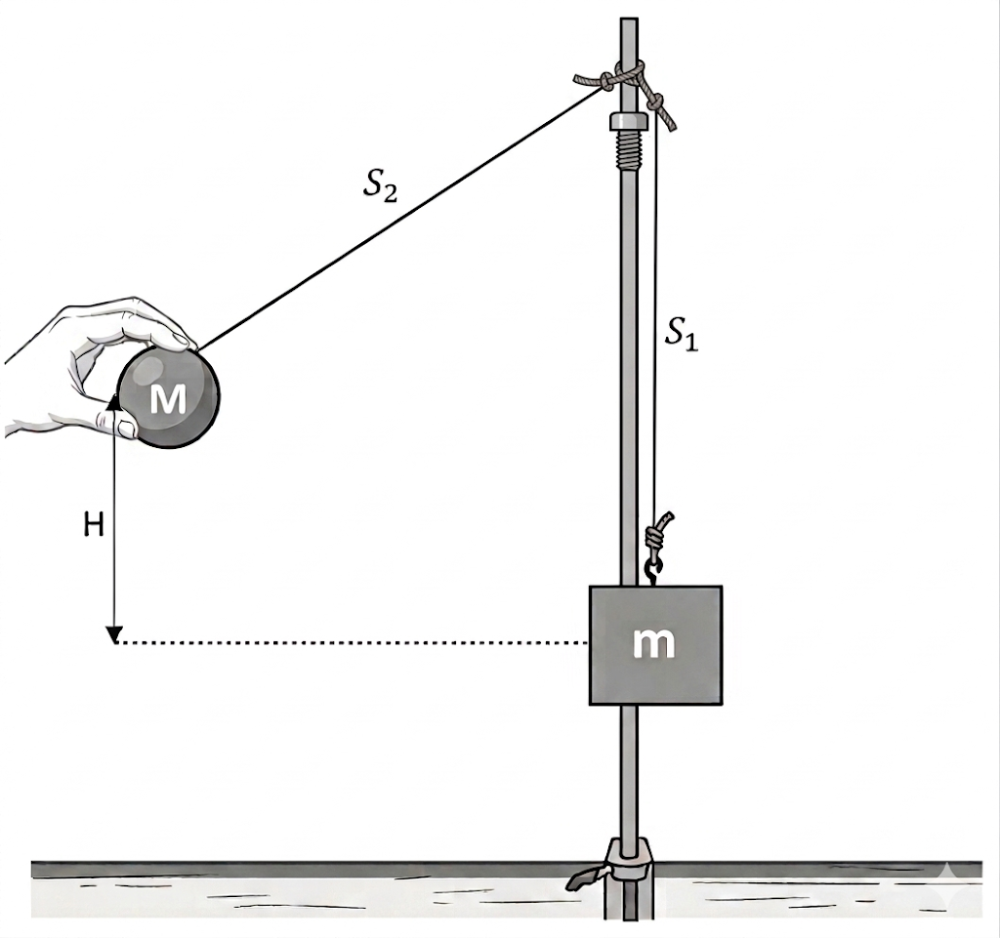

שאלה
במעבדת הפיזיקה ביצעו תלמידים ניסוי למדידת מסה המבוסס על מדידת אורך באמצעות סרגל.
מטרת הניסוי הייתה לקבוע מהי מסתה של תיבה.
התלמידים תלו את התיבה לחוט S1 שאורכו l = 0.8m. בנוסף תלו כדור שמסתו ידועה M = 1kg על חוט S2 באורך זהה. שני החוטים נתלו על אותה נקודת אחיזה כמתואר באיור 1.
התלמידים הסיטו את הכדור לנקודה שגובהה H = 0.5m ביחס לגובה התיבה ושחרר אותו כשהחוט מתוח.

א.שרטטו תרשים הכוחות הפועלים על הכדור רגע לפני פגיעתו בתיבה. [נק' 6.33]
ב.חשבו את עבודתו של כל אחד מהכוחות המופיעים בתרשים הכוחות במהלך תנועתו של הכדור
מרגע שחרורו ועד רגע לפני פגיעתו בתיבה. [נק' 7]
ג.חשבו את מתיחות החוט S2 רגע לפני ההתנגשות בתיבה. [נק' 6]
במהלך ההתנגשות נצמד הכדור לתיבה ושני הגופים עלו יחד לגובה מקסימלי h. התלמידים מדדו גובה זה ומצאו כי h = 0.3m. באמצעות מדידה זו הצליחו לחשב מהי מסתה של התיבה.
ד.חשבו את מסת התיבה. [נק' 8]
ה.במקרה אחר, תלו התלמידים תיבה שמסתה כמסת הכדור (M). הם שחררו את הכדור מגובה H. במהלך ההתנגשות הכדור נצמד לתיבה והם החלו לנוע ביחד. האם הכדור והתיבה עלו לגובה מקסימלי גדול/ קטן/ שווה H/2? נמקו. [נק' 6]